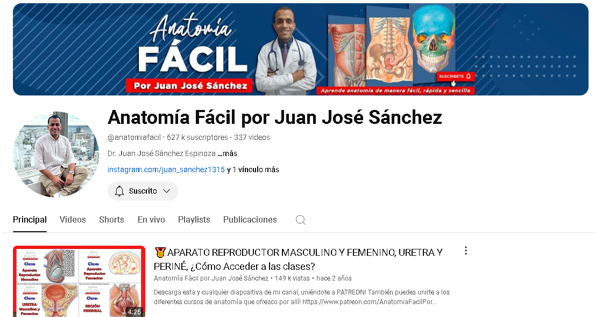
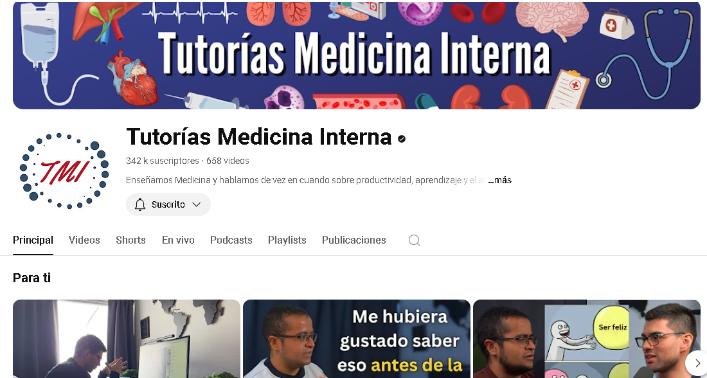
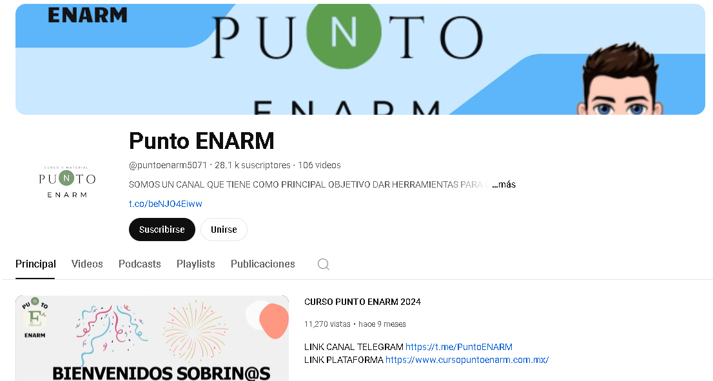

Cursos
EDUCADS_MD
EDUCADS_MD es una plataforma digital desarrollada por la Secretaría de Salud de México, donde su objetivo principal es ofrecer recursos educativos, programas de capacitación y actualización continua a profesionales de la salud en diversas áreas médicas. A través de esta plataforma, los usuarios pueden acceder a cursos en línea, seminarios, talleres y materiales didácticos que contribuyen al desarrollo de sus competencias y conocimientos, asegurando así una práctica médica actualizada y de calidad.
OPS. Campus virtual de salud pública.
La OPS (Organización Panamericana de la Salud) Campus Virtual de Salud Pública es una plataforma educativa en línea que ofrece una amplia gama de cursos y recursos en temas de salud pública. Su objetivo es capacitar a profesionales de la salud y estudiantes mediante cursos gratuitos y de pago, cubriendo áreas como prevención de enfermedades, promoción de la salud, y gestión de sistemas de salud. La plataforma proporciona materiales didácticos, foros de discusión y certificaciones para mejorar las competencias y el conocimiento en el campo de la salud pública.
Coursera
Coursera es una plataforma de aprendizaje en línea que ofrece cursos, especializaciones, certificados profesionales y grados en colaboración con universidades y organizaciones de renombre. Los cursos cubren una amplia variedad de temas, desde tecnología y negocios hasta arte y ciencias. Los usuarios pueden acceder a contenido gratuito o pagar por certificaciones oficiales. Coursera es conocida por su flexibilidad y la calidad de su contenido educativo.
Otros recursos
Canales de YouTube
Anatomía Fácil por Juan José Sánchez
Es un canal de YouTube especializado en la enseñanza de anatomía humana.
Tutorías Medicina Interna
Da información especializada y actualizada en diagnóstico y tratamiento de enfermedades.
Punto ENARM
Brinda recursos y estrategias para preparar el Examen Nacional de Aspirantes a Residencias Médicas (ENARM) en México.